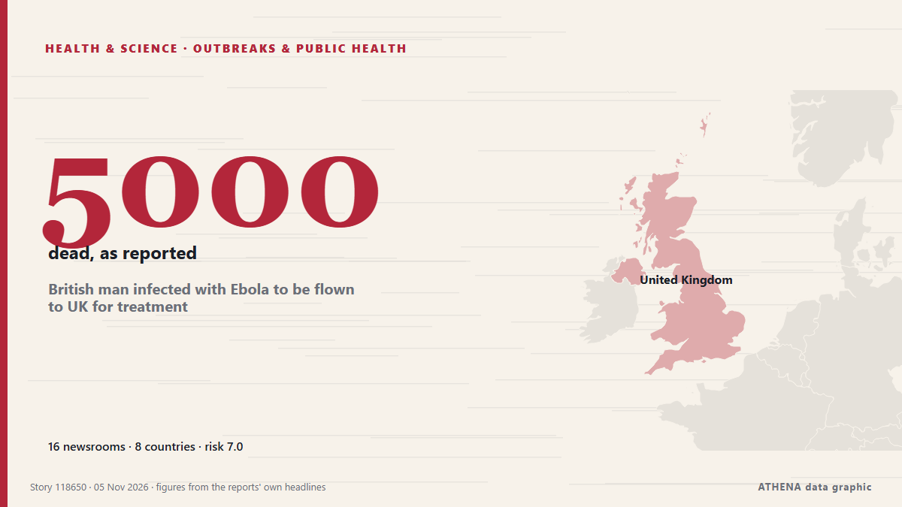

Gesundheit, Wissenschaft und Forschung
GesponsertPräsentiert von  Cybernetics and Artificial Intelligence Lab Welcome to the Cybernetics and Artificial Intelligence Laboratory, established at the Department of Business Administration of the National and Kapodistrian University of Athens. The lab is headed by Professor Dimitrios Thomakos. The lab aims to do research that can be published in top venues. Our research uses tools and methods of Artificial Intelligence, and lies in the following areas: - Forecasting - Decision making - Cyber security - Finance We are always looking forward to collaborating with exceptional students!
Cybernetics and Artificial Intelligence Lab Welcome to the Cybernetics and Artificial Intelligence Laboratory, established at the Department of Business Administration of the National and Kapodistrian University of Athens. The lab is headed by Professor Dimitrios Thomakos. The lab aims to do research that can be published in top venues. Our research uses tools and methods of Artificial Intelligence, and lies in the following areas: - Forecasting - Decision making - Cyber security - Finance We are always looking forward to collaborating with exceptional students!
Schlagzeilen werden auf Englisch angezeigt, wie veröffentlicht.

Ausbrüche und GesundheitBritish man infected with Ebola to be flown to UK for treatment
It is believed he is a healthcare worker who tested positive amid the outbreak in the Democratic Republic of the Congo. von Evening Standard (London)
| 23. Okt. | 76 |
|---|---|
| 24. Okt. | 36 |
| 25. Okt. | 45 |
| 26. Okt. | 83 |
| 27. Okt. | 80 |
| 28. Okt. | 79 |
| 29. Okt. | 90 |
| 30. Okt. | 83 |
| 31. Okt. | 46 |
| 1. Nov. | 34 |
| 2. Nov. | 103 |
| 3. Nov. | 68 |
| 4. Nov. | 80 |
| 5. Nov. | 32 |
A still-recovering pope will head home to Latin America and his beloved Peru for a 12-day trip
Three weeks after lung cancer surgery, Pope Leo XIV is embarking on the longest and farthest trip of his pontificate: a 12-day, three-nation tour of Latin America that carries more personal and… von The National Herald
U.S. Will Drop Smuggling Charges Against Russian-Born Harvard Medical School Scientist
Prosecutors dropped the charges after a federal judge cleared the way for Kseniia Petrova to obtain evidence supporting her claim that she was being vindictively prosecuted. von The Moscow Times
Book about Alexander the Great wins Baillie Gifford Prize for non-fiction
It is the first time a title covering ancient history has won the prize since the award was launched in 1999. von Evening Standard (London)
Why a US-funded vaccine trial on babies was cancelled in Guinea-Bissau
A proposed trial of a hepatitis B vaccine on newborn babies in Guinea-Bissau has been cancelled following accusations that the trial was "unethical" and "neocolonial". von MyJoyOnline
38 Uzbek universities make QS Asia Rankings 2027
38 universities in Uzbekistan have been included in the QS World University Rankings: Asia 2027, with 19 making it into the top 1,000. von Kun.uz (English)
Ex-Prince Andrew called to testify in civil case, 1st royal in 156 years to get witness summons
The former Prince Andrew has been called to testify as a witness in a civil fraud trial, marking what is believed to be the first time in more than 150 years that a member of the royal family has… von The Canadian Press (via CityNews)
Uneven and Fragile Progress Against Neglected Tropical Diseases – New WHO Report
While substantial progress has been made in driving down the global burden of neglected tropical diseases (NTDs), trends are “uneven and fragile”, and several diseases are off course to meet 2030… von Health Policy Watch
Man in 70s suffers life-threatening injuries after being struck by vehicle in East York
A man is in hospital with life-threatening injuries after being struck by a vehicle in East York early Thursday morning. von The Canadian Press (via CityNews)
Australia plans A$28m barriers to stop invasive cane toads spreading
A new project involving Curtin University and Rio Tinto seeks to establish a waterless barrier for cane toads. von Times of India
BBC expert says new NHS blood test that detects cancer early could be 'game changer'
More than 20,000 NHS patients are set to take part in the world-first cancer blood test trial. von WalesOnline
Democratic victories bring historic breakthroughs for women and minorities
CHICAGO: Voters across the US elected a historic slate of women, candidates of color and other underrepresented politicians on Tuesday, reshaping the face of political leadership as Democrats rode a… von Business Recorder
‘Zeptoverse’: CERN scientists uncover evidence of extraordinarily rare particle decay
Scientists at CERN have found evidence of an extraordinarily rare particle decay using the Large Hadron Collider. von Euronews English
Anthrax Outbreak Kills Dozens of Hippos in DR Congo
Deadly bacterial disease confirmed in Virunga National Park as authorities warn of potential risks to nearby communities and wildlife. von News of Bahrain
Liverpool care boss suspended after putting terminally ill man at 'unwarranted risk of harm'
Catherine Inguyi Ngaira provided care for a man by the name of patient A in 2020 following his discharge from hospital. von Liverpool Echo
Ancient DNA charts spread of Celtic and Germanic languages
Hundreds of millions of people today speak Germanic languages: English, Dutch, German, Danish, Swedish, etc.... von ScienceAlert
Ground cinnamon recalled in 14 states because of elevated lead levels
Why cinnamon has repeatedly been found to contain potentially dangerous amounts of lead By Mark Huffman of ConsumerAffairs November 3, 2026 SLR Food Distribution Inc. has recalled Wise Wife brand… von Consumer Affairs
Democrats take House and Senate from Republicans in US midterm rout
Democrats will control both chambers of Congress after flipping seats in Republican strongholds. von Malaysiakini
NASA's Swift space telescope plunges to Earth after 22 years in orbit
One of NASA's premier space telescopes plunged to Earth on Wednesday, ending its 22-year investigation of gamma ray bursts and exploding stars. von CBC News (alternative feed)
Cardiff City 3-3 West Ham highlights
Cardiff City's injury crisis has deepened ahead of West Ham's visit, with Brian Barry-Murphy facing mounting selection headaches and fresh concerns. von WalesOnline
WHO sounds alarm over lack of physical activity among teens
GENEVA, Switzerland (AFP) — A quarter of teens globally engage in basically no physical activity — not even an hour of exercise a week — the World Health Organization (WHO) said Wednesday, warning… von Jamaica Observer
NFL-Lions linebacker Campbell has full movement in lower body after injury
Jack Campbell took a hard hit on his helmet from T.J. von Times of India
Nigeria: Cheap Version of Breakthrough HIV Prevention Shot Approved
[Daily Trust] The US Food and Drug Administration on Monday approved a low-cost version of a twice-yearly HIV prevention shot, bringing the breakthrough drug closer to market in low-income countries. von AllAfrica
Kansas sends Democrat to US Senate for first time since 1932
The result is a blow to Donald Trump, who carried Kansas by more than 10 points in each of his three presidential campaigns and travelled there last week. von Free Malaysia Today
Minority files motion to review Speaker’s ruling on drug seizures inquiry
By: Valentia Tetteh The Minority Caucus in Parliament has filed a motion seeking a review of the Speaker’s September 29, 2026 ruling, which dismissed a request for a parliamentary inquiry into major… von GBC Ghana Online
Are you ready for 72 hours? Thailand urges emergency bag preparations
Thailand’s Department of Disaster Prevention and Mitigation (DDPM) has urged households to prepare emergency bags containing enough food, water, medicine and essential supplies to survive for at… von Khaosod English
‘Mogging’ named Collins Dictionary’s Word of Year for 2026
Slang term refers to outshining or outperforming someone or something. von Anadolu Agency (English)
Doctor injured in stabbing attack at hospital in western Seoul
A man stabbed and injured a doctor at a major hospital in western Seoul, police said Wednesday, adding that they are investigating the motive for the attack. von The Korea Times
South Carolina elects Democratic senator for first time in almost three decades
Annie Andrews is projected to defeat Darline Graham, who was handpicked by President Trump to take her brother's seat after his death. von BBC News
Ethiopia attacks kill civilians as health system nears collapse, WHO chief says
The World Health Organization reports that attacks in northern Ethiopia are pushing the region's fragile health system closer to collapse. von ABC News (International)
Evidence of red blood cells found in 115-million-year-old dinosaur’s bones
Researchers say fossilised red blood cells were previously considered to be an ‘impossible’ discovery. von The Independent
Upfront TAVR May Be the Way Forward in Moderate Aortic Stenosis, Trial Suggests
(MedPage Today) -- Upfront transcatheter aortic valve replacement (TAVR) was more protective against death and heart failure events compared with clinical surveillance among patients with moderate… von MedPage Today
Ebola survivors comfort sick children in Congo’s isolation wards
BUTEMBO, Congo, Nov 3 - Whenever Jerkis Mahamba hears a child cry out in the Ebola ward in Butembo, eastern Democratic Republic of Congo, he puts on protective gear and rushes to their side. von The Straits Times
Connecticut senator Chris Murphy hospitalized after stroke
Democratic senator was at his son’s hockey game when he felt a numbness in his arm and was in Johns Hopkins Democratic US Senator Chris Murphy has been hospitalized after suffering a stroke. von The Guardian
Philips settles sleep apnoea case with US regulators for €288m
Health technology giant Philips has paid the US justice department €288 million to settle a long-running lawsuit over its defective... von DutchNews.nl